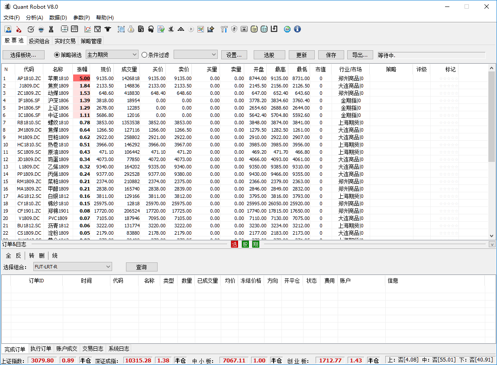
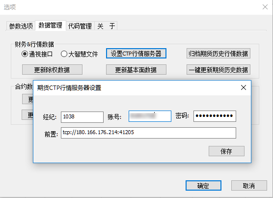

QuantRobot程序¶
QuantRobot程序的主界面如下图所示：
参数设置¶
数据源设置¶
点击菜单【参数】->【选项】，打开设置对话框，如图所示：
历史行情源¶
股票历史行情源，可以设置为“通达信”，选择通达信行情软件的安装目录，如“d：new_gxzq_v6”。
期货历史行情源，可以设置为“文华财经”，选择文华财经行情软件的安装目录，如“d：wh6”。
实时行情源¶
股票实时行情源，可以设置为“新浪”，并将“启动WEB行情”选项，设置为“True”。
Note
注意：WEB行情源通常会有3秒左右的延时。
期货实时行情源可以使用CTP行情源，首先必须开通一个期货账户，如果您已经开通了期货交易账户，可以在期货公司哪里得到 CTP行情服务器的设置，如果没有，可以到SimNow仿真交易网站[www.simnow.com.cn <http://www.simnow.com.cn/>]免费 注册一个账号。
有了账号以后，打开设置对话框中的“数据管理”选卡项，点击【设置CTP行情服务器】按钮，弹出设置对话框，如下图：
设置好后，关闭对话框，回到前面设置行情源的位置，在“CTP行情服务器配置”选项选择“CTP行情服务器”，并将“启动CTP行情” 选项，设置为“True”。